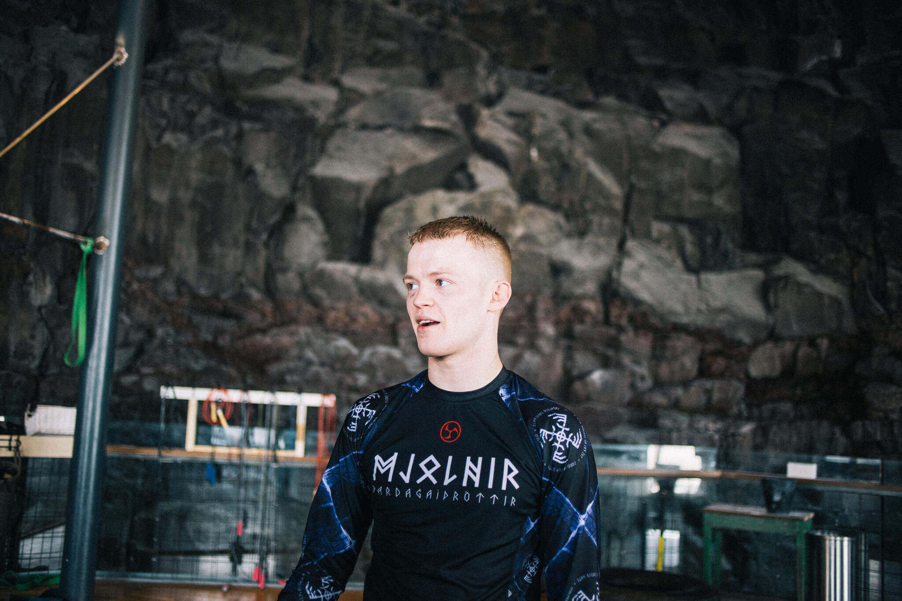
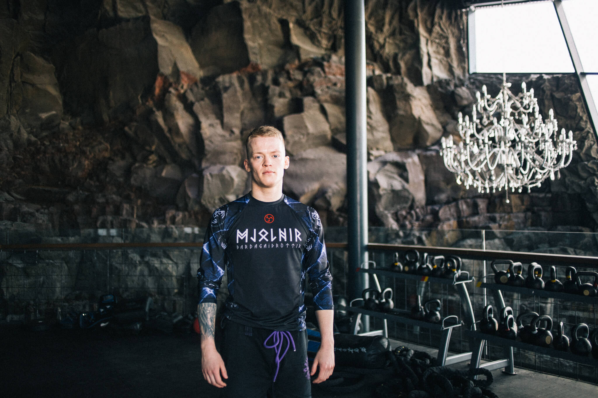
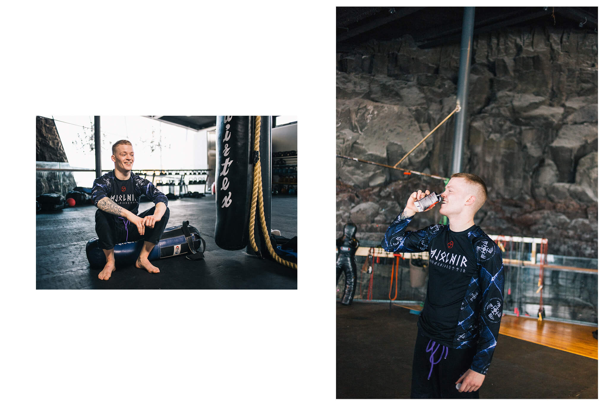

Medical student and wrestler Tryggvi Ofeigsson is 26 years old and shares his experience as addict. After years of low self-esteem, he was about to throw his life away. After treatment, Tryggvi spent a whole year doing a lot of self-work as he rebuilt his life from scratch. Without his family and the resources offered to him, Tryggvi would not be where he is today.
"When I started high school I was a heavy, nervous and very fearful teenager. This came across as low self-confidence and a hunger for approval from my peers. I started drinking when I was 16 and immediately felt what it did for me. I felt very confident under the influence of alcohol, which was the opposite of how I was in everyday life. All the problems disappeared when I was intoxicated; I experienced no anxiety and could be completely myself. Soon after I started drinking, I started using drugs: e-pills, amphetamines, cocaine, weed, and later medical drugs. In the end it was just whatever I could get into at the time. The high school years were characterized by complete confusion and in my third year I was expelled from school."
It was Tryggva's family that intervened and sent him to Vog for his first treatment when he was twenty. "I didn't go to treatment for myself, but to calm everything down at home. The educational program at Vogi still left something with me. I learn about what it means to be an addict, what the disease is like. I wasn't going to quit though. The reason was that it was simpler not to quit. So I come home, then shortly after move into a villa with five friends who were in the same situation as me. It goes without saying that it didn't end well. We took a year where I completely trashed myself. I was throwing my life away. I knew that, but I really just didn't care. I didn't feel like my life was worth anything anymore, didn't feel like anything mattered. It didn't occur to me that my actions would affect others as well. I later learn that is certainly not true. Everything I was doing to myself had a profound effect on the lives of others. Their ability to live and function normally."
"I didn't feel like my life was worth anything anymore, didn't feel like anything mattered. It didn't occur to me that my actions would affect others as well."
It wasn't until one morning, in the early summer of 2012, that Tryggvi wakes up helpless and depressed, calls Vog in his despair and books a place for himself. "I remember this morning. I was morbidly obese, broke and had no money. I'm just about to give up so I call Libra. It is the nature of the disease to wake up, groggy or having done something terrible the night before with the highest morale imaginable. But then you just move on and forget about it. I forgot that I called, that I was going to change my life."
A little over two months after Tryggvi calls in, he receives a call from Vogi that he has a place. Then he had been lying at home for a whole weekend in a cold sweat in his own words. "It was the Monday after the shopping weekend that I got the call. I had stayed home alone for a whole weekend because I had no money to go to a festival with my friends. All the drug dealers were out of town and I had nothing to get me. I was lying in bed thinking, Wow, I can't believe this is my life. "

"I was lying in bed thinking, Wow, I can't believe this is my life."
“I'm going into my second treatment with the mindset that I just need to straighten out my life a bit so I can start using again as soon as possible. I was focused on making a foolproof plan of things I needed to sort out before I could start using. Where was I going to work? How do I go about paying off debt? But I always end up with the same result. I've tried it all before and it didn't work. All of a sudden, the conviction washes over me that I will never be able to use drugs or drink alcohol again, for myself or others."
After the second treatment, a full year of self-work, organization meetings and rehabilitation took place. Tryggvi says that this year created the foundation for the life he lives today.
"It takes time to reset. It sounds like an incredible amount of time to spend a whole year, but it was necessary to overcome this original problem which was fear and anxiety. This emotional entanglement that is addiction and alcoholism. After this rehabilitation, I have done what I want. I am still working purposefully to make myself better. I was very lucky that my family had my back. Not everyone lives by that. They were ready to do everything to get me back on my feet."
"I started treatment with the mindset that I would never be able to re-educate myself." I think we all grow up thinking that we are destined for something great, that we are going to achieve something. I was a very strong student until I got into some trouble. I got a lot of praise for it, both in elementary school and in the early stages of high school, that I could do really well if I put in the effort. So when I started my education again, I just took a few steps - I first took 10 credits at the polytechnic school at Ármúla and gradually it worked out. In my last semester I was tutoring kids who had a hard time learning and I graduated with a good grade and stood up as a medical student. But it was definitely difficult to take this step, to go back to a healthy lifestyle. Tackle some mundane task that I had just given up on.”

Tryggvi says that more knowledge is needed in society about this disease. Instead of thinking of addicts as poor people and addicts, we need to think of them as patients.
"The discussion in society is based on the fact that addicts are just drug addicts. Sure we are people who use drugs but that doesn't mean we are the only ones. Having this image of yourself going into therapy is the biggest problem. To go somewhere and try to be better thinking that you are just poor. That's what the debate tells you, what the movies tell you, what the whole society tells you. We need to change this."
"Instead of thinking of addicts as poor people and drug addicts, we need to see them as patients."
"Addiction is a collection of ailments that cannot be defined as one thing. In all the cases I know of, including my own, some internal emotional entanglement has to be resolved in order to solve the real problem."

Today, Tryggvi's life consists of studying medicine, his work at the psychiatric department of Landspítalan and wrestling training at Mjölnir.
"Exercise is key to mental well-being. Meditation and general mindfulness have also helped me a lot and still do today. When I meditate, I feel no worry about what I'm going to do tomorrow and no guilt about what I did yesterday. I'm not nervous about today's tasks. One of the best forms of meditation for me is wrestling. It's incredibly hard to worry about school while someone is trying to strangle me. I find that every time I go to practice in Mjölnir, I often go in there with all my worries and after practice I walk out without them."
“For someone who is struggling to get help, I would say number one, two and three is don't wait. For people like us, who are very sorry, you don't know if you will be alive in a week. Whether it's an overdose or you just give up and drive off a cliff. Surround yourself with people who are on the same path and especially people who are further along and learn from them."
The interviewees appeared in the interviews on their own terms. The interview is based on their experiences. It is worth mentioning that experiences are personal and not everyone experiences the same symptoms.
Hugrún also wants to point out the resources that are available to those who believe they are experiencing symptoms of addiction here .